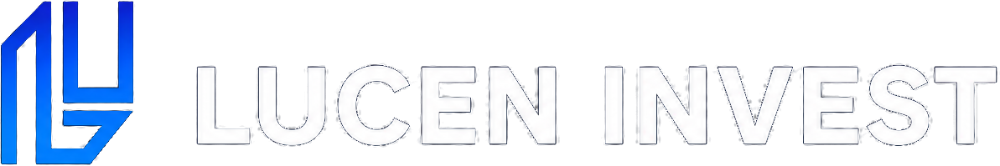
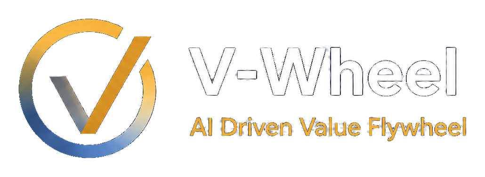
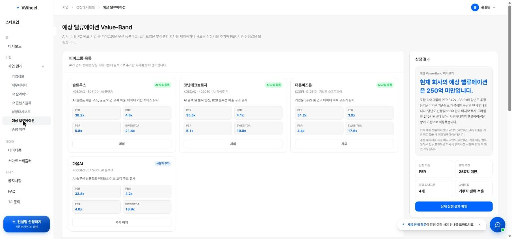
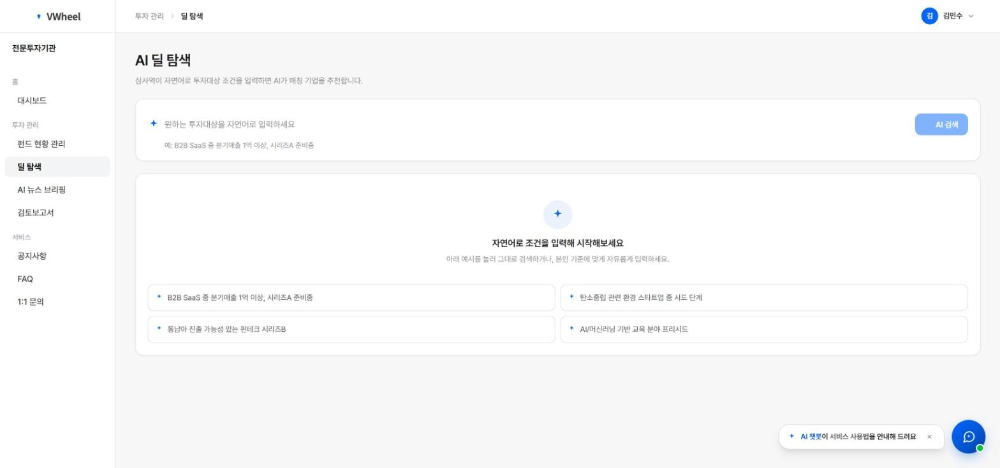
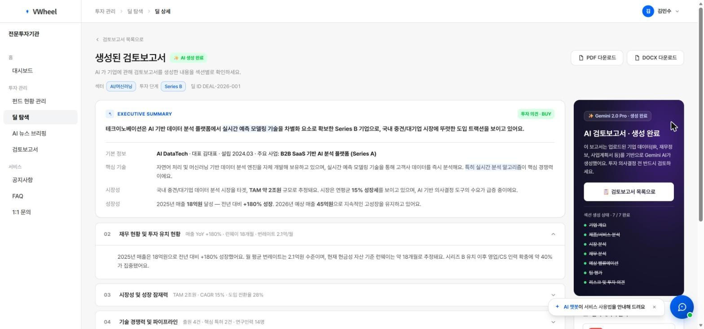
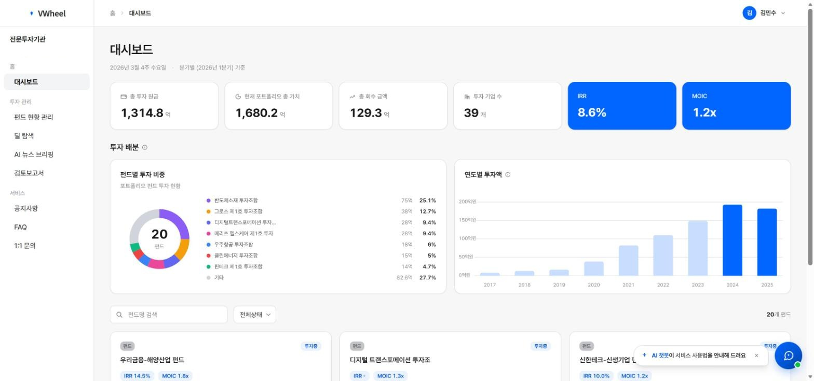

01 / INVESTMENT
Investment
Seed · Venture · Pre-IPO
유망 기업을 발굴하고 초기투자부터 Pre-IPO까지 성장단계에 맞춰 전략적으로 투자합니다.
VIEW BUSINESS →
CONTACT →INVESTMENT · STRATEGIC ADVISORY · AI
기업의 가치를 발견하고,
성장과 성공적 Exit를 함께합니다.
We invest in potential, build value,
and connect companies to capital markets.
WHAT WE DO
01 / INVESTMENT
유망 기업을 발굴하고 초기투자부터 Pre-IPO까지 성장단계에 맞춰 전략적으로 투자합니다.
VIEW BUSINESS →02 / STRATEGIC ADVISORY
IPO·M&A·자본시장 경험을 기반으로 기업가치 제고와 거래 실행을 연결합니다.
VIEW BUSINESS →03 / AI GROWTH FINANCE
기업분석, Value-Band, AI Review와 사후관리를 하나의 데이터 흐름으로 연결합니다.
VIEW PLATFORM →
OUR PLATFORM
기업의 데이터를 연결하고 분석하여 투자기회를 발굴하고 가치를 극대화하는 AI 기반 의사결정 플랫폼입니다.
V-WHEEL 자세히 보기 →



FUND MANAGEMENT
성장 가능성이 높은 기업을 발굴하고 기업가치 제고와 후속 성장을 지원합니다.